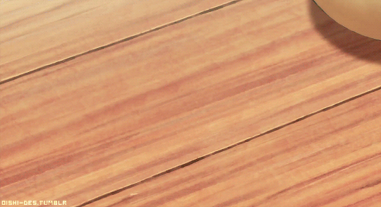

Chocolate Chip Cookies

A chocolate chip cookie recipe amended from The Guardian by Felicity Cloake for her How to Cook Perfect Series.
Ingredients required
- 120g butter, at room temperature
- 80g light muscovado sugar
- 80g granulated sugar
- 1tsp vanilla extract
- 1 large egg
- 240g plain flour
- ½ tsp bicarbonate of soda
- 200g chocolate of your choice, roughly chopped
- 50g hazelnuts, roughly chopped (optional)
- pinch of salt
Instructions
- Using a wooden spoon, or (even better) a food mixer, beat together the butter and sugars until just combined. Add the vanilla extract, then the egg, and beat in well.
- Sift together the flour, bicarbonate of soda and salt, then use a spoon to add to the mixture, stirring until it just comes together into a dough. Fold in the chocolate pieces and hazelnuts (if using), then chill overnight, or for up to 72 hours.
- Preheat the oven to 180C. Line two baking trays with greaseproof paper, and divide the mixture into golf-ball sized rounds, spacing them well apart. Bake for about 15 minutes, until golden, but not browned.
- Allow to cool on the tray for a couple of minutes, before moving to a wire rack to cool completely.